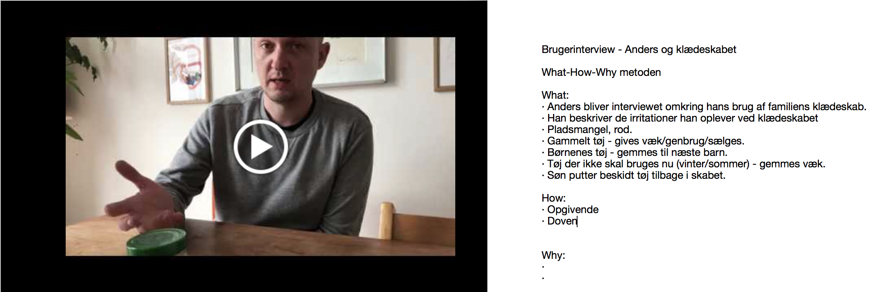
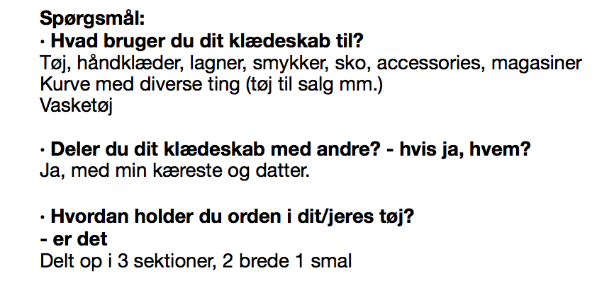

Brugerinterviews
Anders og klædeskabet

What-How-Why metoden
What:
Anders bliver interviewet omkring sit brug, af familiens klædeskab.
Han beskriver de irritationer han oplever ved klædeskabet.
Pladsmangel, rod.
Gammelt tøj - gives væk/genbrug/sælges.
Børnenes tøj - gemmes til næste barn.
Tøj der ikke skal bruges nu (vinter/sommer) - gemmes væk.
Søn putter beskidt tøj tilbage i skabet.
How:
Opgivende
Doven
Why:
Anders mangler motivation.
problemstillingen er kedelig og uinteressant
Karoline og klædeskabet

What-How-Why metoden
What:
Karoline beskriver brugen af familiens klædeskab.
Skabet bliver hovedsageligt brugt til opbevaring af familiens tøj - både rent og beskidt.
Sko, smykker, accessories, magasiner.
Oven på skabet står der kurve med diverse ting - fx. Tøj der er sat til salg.
Skabet er godt organiseret.
Godt system, let at finde ting.
How:
Hun virker tilfreds
Why:
I det travle familieliv er det vigtigt at have styr på de basale ting i hjemmet.
Et organiseret klædeskab er med til at få de små ting i hverdagen til at glide lidt lettere.